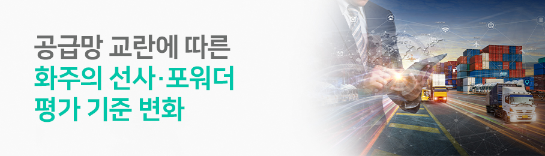
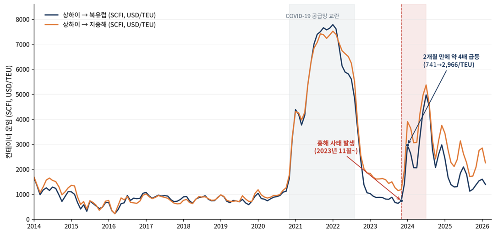

공급망 교란에 따른 화주의 선사·포워더 평가 기준 변화

코로나19 팬데믹 이전까지 화주의 선사 및 포워더 선정 기준은 비교적 명확했다. 정해진 출발지에서 목적지까지 화물을 운송할 수 있는 후보를 찾고, 이들이 제시한 운임과 운송시간, 서비스 조건을 비교한 뒤 가장 경제적인 대안을 선택하면 됐다. 선사와 포워더의 서비스에 큰 차이가 없다면 낮은 운임을 제시한 업체가 우선적으로 선정됐다. 화주의 물류 활동은 기본적으로 비용 절감을 목적으로 하는 조달 활동으로 인식됐기 때문이다.
그러나 지속적인 공급망 교란이 초래한 다중 위기 시대에는[1] 이러한 전제가 더 이상 유효하지 않다. 공급망 교란은 특정 지역에서 일시적으로 발생하는 예외적 사건이 아니라, 반복되는 구조적 위험으로 인식되면서 해운 네트워크의 구조와 운송 경로를 재편하는 요인이 됐다[2].
이러한 환경에서 화주의 선사 및 포워더 선정 기준도 달라지고 있다. 다만 새로운 평가 기준이 등장했다기보다는 기존 기준의 중요도와 의미가 변화했다고 보는 것이 정확하다. 운임, 정시성, 선복, 네트워크, 고객서비스, 정보 제공, 기업 신뢰도 등은 과거에도 중요한 기준이었다. 달라진 것은 화주가 이러한 기준을 평가하는 목적이다.
과거의 핵심 질문이 “누가 가장 낮은 가격으로 운송할 수 있는가”였다면, 이제는 “누가 교란이 발생하더라도 화물의 흐름을 유지할 수 있는가”가 중요해졌다. 즉, 화주의 물류 파트너 선정 목적이 단순한 운송비 최소화에서 공급망의 변동성과 손실 가능성을 관리하는 방향으로 변화하고 있다.
1. 기존 화주의 평가기준
화주의 선사와 포워더 선정 기준은 크게 일곱 가지로 정리할 수 있다.
첫 번째, 비용과 가격 안정성이다. 여기에는 기본운임뿐 아니라 유류할증료(Fuel Surcharge), 성수기 할증료(PSS, Peak Season Surcharge), 체선료(Demurrage)와 장치료(Storage Charge), 포워딩 수수료(Forwarding Fee), 계약기간 중 가격 변동 가능성이 포함된다.
두 번째, 운송시간과 스케줄의 신뢰성이다. 공표된 운송시간, 정시 도착률, 결항 빈도, 화물 이월, 환적 연결의 안정성이 이에 해당한다.
세 번째, 선복과 장비의 가용성이다. 화주가 필요한 시기에 실제 선복을 확보할 수 있는지, 공컨테이너와 냉동·냉장 컨테이너 등 필요한 장비가 적시에 공급되는지가 중요하다.
네 번째, 서비스 빈도와 네트워크 범위다. 직항 여부, 기항지, 출항 빈도, 환적 구조, 내륙운송 연결과 Door-to-Door 서비스 능력이 포함된다.
다섯 번째, 화물관리와 클레임 처리 능력이다. 화물의 안전, 파손과 분실 방지, 위험화물이나 특수화물 처리 능력, 사고 발생 이후의 보상과 클레임 대응이 평가 대상이 된다.
여섯 번째, 대응성과 전문성이다. 문제가 발생했을 때 얼마나 신속하게 대응하는지, 규제와 통관에 관한 지식을 갖추고 있는지, 대체방안을 제시할 수 있는지가 중요하다.
마지막은 기업의 신뢰도와 가시성이다. 재무건전성, 기업 평판, 해외 파트너 네트워크, 화물추적, 예상 도착시간의 정확성, 전자문서와 정보시스템 연계 능력이 여기에 포함된다.
이 일곱 가지 기준은 공급망 교란 이전에도 존재했다. 달라진 것은 화주가 이 기준을 바라보는 방식이다. 과거에는 각 항목을 비교해 가장 높은 평가를 받은 업체를 선택하는 것이 일반적이었다. 그러나 현재 화주는 해당 기준들이 교란 상황에서 공급망의 연속성을 얼마나 확보할 수 있는지를 평가해야 한다.
2. 평가 기준 변화
2.1 최저운임에서 위험조정 물류비용으로
공급망 교란 이후 가장 먼저 재정의해야 할 것은 비용 평가 기준이다. 화주에게 운임은 여전히 중요하다. 특히 원자재와 범용제품처럼 제품 가격에서 물류비가 차지하는 비중이 높은 화물은 운임 경쟁력을 무시하기 어렵다. 그러나 가장 낮은 운임이 반드시 가장 낮은 물류비용을 의미하지는 않는다.
운임이 저렴한 서비스를 선택하더라도 선적이 반복적으로 이월되거나 도착이 크게 지연되면 화주는 추가 재고를 확보해야 한다. 생산계획을 변경하거나 긴급 항공운송을 이용해야 하며, 고객 납기 지연에 따른 손실을 부담할 수도 있다. 체선료와 장치료, 추가 보관비용, 주문 취소와 생산 중단 비용까지 포함하면 최초의 운임 절감액보다 훨씬 큰 비용이 발생할 수 있다.
따라서 공급망 교란 시대에는 운송 대안을 다음과 같은 위험조정 물류비용을 기준으로 평가해야 한다.
- 위험조정 물류비용 = 직접 운임 + 각종 부대비용 + 재고비용 + 지연비용 + (교란 발생확률 × 예상손실)
이러한 관점에서는 운임 수준뿐 아니라 운임의 안정성, 할증료의 투명성, 계약조건의 예측 가능성도 중요해진다. 홍해 사태 초기 아시아발 유럽행 컨테이너 운임이 단기간에 급등한 사례는 항로 교란이 선복과 운임에 즉각 반영될 수 있음을 보여준다.
결국 화주는 표면적인 운임만으로 경제성을 판단해서는 안 된다. 운송 차질로 발생할 수 있는 간접 비용까지 포함해 어떤 대안이 실질적으로 가장 경제적인지를 평가해야 한다.

(출처: Shanghai Containerized Freight Index[3])
2.2 평균 운송시간에서 운송시간 변동성으로
정시성과 운송시간은 과거에도 대표적인 선정 기준이었다. 그러나 공급망 교란 이후 서비스 신뢰성의 의미가 달라졌다. 과거에는 공표된 운송시간이 짧고 선박의 출항 빈도가 높으면 경쟁력 있는 서비스로 평가됐다. 현재는 평균 운송시간보다 실제 운송시간의 변동성과 교란 이후의 회복 가능성이 더 중요할 수 있다.
예정 운송시간이 25일인 서비스가 실제로는 25일에서 40일 사이에 도착한다면 화주는 생산과 재고를 계획하기 어렵다. 반면 예정 운송시간이 30일이더라도 실제 도착일이 29일에서 32일 사이에 유지된다면 공급망 계획에는 후자가 더 유리할 수 있다. 따라서 화주는 단순한 평균 운송시간이 아니라 정시도착률, 운송시간의 표준편차, 화물 이월률, 결항 빈도, 환적 실패율 등을 함께 확인해야 한다.
Journal of Commerce[4]에 따르면, 2026년 해운시장에서 가격보다 공급망의 확실성이 화주의 의사결정을 좌우할 것으로 평가했다. 교란이 일시적 사건이 아니라 반복되는 구조적 위험으로 인식되면서 화주가 서비스의 예측 가능성과 신뢰성을 더욱 중시하게 된다는 것이다.
2.3 선복 확보에서 운송능력 보장으로
팬데믹 이전에는 선복과 컨테이너 장비의 확보가 주로 성수기 운영 문제로 인식됐다. 그러나 팬데믹 기간에 나타난 선복 부족과 컨테이너 수급 불균형은 운송능력 자체가 공급망 경쟁력을 좌우하는 핵심 요소임을 보여줬다.
화주에게 중요한 것은 계약상 명시된 선복과 더불어, 필요한 항로와 시기에 실제로 이용할 수 있는 선복이다. 따라서 연간 운송계약을 체결할 때는 최소 물량만 약정할 것이 아니라 선복 보장 수준, 장비 공급 조건, 화물 이월 처리 기준, 결항 발생 시 대체 편 제공 여부를 구체적으로 확인해야 한다.
포워더 선정에도 같은 원칙이 적용된다. 특정 선사와의 관계만을 강조하는 포워더보다 여러 선사로부터 선복을 확보하고, 시장 상황에 따라 이를 재배치할 수 있는 포워더가 교란 상황에서 더 높은 가치를 제공할 수 있다.
공급망 복원력 연구에서 여유 자원의 확보와 대체 가능성을 핵심 요인으로 제시하는 이유도 여기에 있다. 여유 선복과 대체 운송수단은 평상시에는 비효율로 보일 수 있지만, 교란이 발생하면 공급망의 연속성을 확보하는 일종의 보험이 된다.
2.4 네트워크 규모에서 대체 가능한 연결성으로
과거 화주들은 기항지 수, 직항서비스 여부, 항차 빈도 등을 중심으로 선사의 네트워크 경쟁력을 평가했다. 포워더의 경우에는 해외지사와 파트너 수, 제공 가능한 운송수단의 범위가 주요 평가 기준이었다. 그러나 공급망 교란이 반복되면서 네트워크 평가의 초점은 단순한 규모와 범위에서 기존 경로가 중단됐을 때 활용할 수 있는 대체경로와 연결 수단의 확보 여부로 이동하고 있다.
기항지가 많고 서비스 범위가 넓더라도 특정 환적항이나 해협에 지나치게 의존하는 네트워크는 해당 거점에서 교란이 발생하면 전체 서비스가 동시에 영향을 받을 수 있다. 반면 서비스 범위가 상대적으로 제한적이더라도 복수의 환적항과 대체 항로, 안정적인 내륙 운송망을 확보하고 있다면 위기 상황에서 화물 흐름을 보다 신속하게 복원할 수 있다. 따라서 중요한 것은 네트워크의 규모가 아니라, 하나의 경로가 차단됐을 때 다른 경로로 전환할 수 있는 능력이다.
Journal of Commerce[5]는 공급망 변동성이 확대되면서 화주들이 항만과 배후지를 연결하는 단거리 육상운송 사업자를 다변화하는 움직임에 주목했다. 특정 사업자에게 물량을 집중하면 운임 협상과 운영 효율성 측면에서 규모의 경제를 확보할 수 있다. 그러나 해당 사업자의 운송능력에 문제가 발생하면 항만에서 내륙으로 이어지는 화물 흐름 전체가 중단될 수 있다. 이에 따라 화주들은 복수의 운송 사업자를 확보함으로써 평상시의 효율성보다 교란 발생 시의 대체 능력을 강화하는 방향으로 전략을 전환하고 있다.
2.5 사후 대응에서 선제적 문제 해결로
평상시 고객서비스는 견적 회신 속도, 담당자의 친절도, 클레임 처리와 같은 요소로 평가할 수 있다. 그러나 공급망 교란 상황에서는 대응성의 의미가 훨씬 넓어진다. 중요한 것은 문제가 발생한 뒤 문의에 답변하는 것이 아니라, 교란이 화주의 생산과 판매에 영향을 미치기 전에 이를 파악하고 대안을 제시하는 능력이다.
교란 상황에서 선사와 포워더에게 요구되는 역할은 세 단계로 구분할 수 있다. 첫째, 교란의 발생 가능성을 조기에 파악해야 한다. 둘째, 해당 교란이 화물과 공급망에 미칠 영향을 설명해야 한다. 셋째, 대체 선복과 항만, 운송수단을 포함한 실행 가능한 대안을 제시해야 한다.
특히 포워더의 경쟁력은 화물을 직접 운송하는 능력보다 여러 주체를 조정하는 능력에서 나타난다. 포워더는 선사, 항공사, 트럭회사, 철도운영자, 항만, 세관, 창고업체를 연결한다. 따라서 우수한 포워더는 가장 낮은 운임을 찾아주는 중개자가 아니라, 교란 상황에서 전체 물류 흐름을 재구성하는 업체다.
2.6 위치 추적에서 의사결정 지원으로
디지털 가시성은 공급망 교란 이후 의미가 크게 달라진 평가 기준이다. 과거의 화물추적은 컨테이너가 어느 항만에서 출발했고 현재 어디에 있는지를 확인하는 기능에 가까웠다. 그러나 오늘날 화주에게 중요한 것은 위치정보 자체가 아니라, 해당 정보가 생산과 재고 의사결정에 어떤 도움을 주는 가이다.
선박의 위치가 실시간으로 제공되더라도 예상 도착시간이 계속 변경되거나 환적 실패 가능성을 알 수 없다면 화주의 의사결정에는 큰 도움이 되지 않는다. 화주에게 필요한 정보는 예상 도착시간의 정확도, 항만 혼잡과 접안 지연 가능성, 환적 연결 여부, 컨테이너 반출 가능 시간, 내륙운송 일정의 변화다.
따라서 정보 가시성은 세 가지 수준으로 평가해야 한다. 첫째는 화물의 현재 상태를 보여주는 기술적 가시성이다. 둘째는 향후 지연 가능성을 예측하는 분석적 가시성이다. 셋째는 지연에 대응할 수 있는 대안을 제시하는 실행적 가시성이다.
화주는 선사와 포워더의 플랫폼 화면이나 기능 목록만으로 가시성을 평가해서는 안 된다. 데이터의 정확성, 업데이트 주기, 예상 도착시간의 신뢰도, API·EDI 연계 가능성, 예외 상황 알림, 서류의 정확성까지 함께 검토해야 한다.
2.7 기업 평판에서 통합 위험 관리로
마지막 기준은 위험관리와 기업의 책임성이다. 과거에는 운송인의 재무건전성, 화물 안전, 클레임 기록, 기업 평판이 주요 평가 대상이었다. 최근에는 지정학적 위험, 사이버 보안, 제재와 통관규정, 환경규제, 사업 연속성 계획까지 평가 범위가 확대되고 있다.
화주는 선사가 특정 항로나 동맹에 과도하게 의존하는지, 포워더가 특정 선사나 지역에 물량을 집중하고 있는지 확인해야 한다. 주요 정보시스템이 중단됐을 때 업무를 지속할 수 있는지도 중요한 평가 요소다. 위험관리 계획이 문서로 존재하는 것과 실제 대응능력을 갖추는 것은 다르므로, 과거 교란 상황에서 어떤 조치를 취했는지를 검증해야 한다.
환경규제 대응능력도 이러한 위험관리의 일부다. 홍해 우회와 같은 지정학적 교란은 운송거리와 연료소를 증가시켜 추가 비용과 탄소 배출 증가로 이어질 수 있다[6]. 따라서 화주는 운송 차질에 대한 대응능력뿐 아니라 교란으로 발생하는 환경 및 규제 부담을 관리할 수 있는지도 함께 평가해야 한다.
[표 1] 화주를 위한 선사·포워더 평가 체크리스트 — 공급망 교란 시대, 7개 기준의 신·구 관점 비교 —
| NO. | 평가 기준 | 과거 관점 | 공급망 교란 이후 관점 | 핵심 평가 질문 | 화주 실무 체크 항목 |
|---|---|---|---|---|---|
| 1 | 비용·가격 안정성 | 최저운임 확보 | 위험조정 물류비용 최소화 | 표면 운임이 아닌 실질 비용 관점에서 가장 경제적인가? |
□ 기본운임·부대비용(BAF/PSS/체선료/장치료) 투명성 □ 계약기간 중 할증료 부과 조건 □ 재고·지연·긴급운송 발생 시 비용 부담 구조 □ 위험조정 물류비용 산정 근거 제공 여부 |
| 2 | 운송시간·스케줄 신뢰성 | 짧은 평균 운송시간, 높은 출항빈도 | 운송시간 변동성, 회복 가능성 | 예정 도착일이 얼마나 정확하게 지켜지는가? |
□ 정시도착률(OTP) 12개월 실적 데이터 □ 실제 운송시간의 표준편차 □ 화물 이월(Rollover)률 □ 결항(Blank Sailing) 빈도 □ 환적 실패율 |
| 3 | 선복·장비 가용성 | 성수기 선복 확보 | 교란 시에도 확보 가능한 운송능력 | 필요한 시점에 실제로 선복을 확보할 수 있는가? |
□ 연간계약 최소물량 대비 실제 선복 보장 수준 □ 공/냉장/특수 컨테이너 공급 조건 □ 이월 처리 기준 및 우선순위 □ 결항 시 대체 편 제공 조항 □ 복수 선사 선복 접근성(포워더 평가 시) |
| 4 | 네트워크·연결성 | 기항지 수, 직항서비스, 항차 빈도 | 대체경로 확보 능력, 노드 리스크 분산 | 하나의 경로가 차단됐을 때 즉시 전환 가능한 대안이 있는가? |
□ 주요 항로별 대체 서비스 존재 여부 □ 환적항 분산(단일 허브 의존도) □ 내륙운송 사업자 다변화(Drayage) □ 항만·철도·트럭 복합운송 연계 □ 지역별 대체 운송수단 옵션 |
| 5 | 대응성·문제해결 | 견적 회신 속도, 사후 클레임 처리 | 교란 조기 파악·선제적 대안 제시 | 문제 발생 전에 미리 알리고 대안을 제시하는가? |
□ 리스크 조기 알림 채널 운영 □ 교란 발생 시 영향 분석 리포트 제공 □ 실행 가능한 대체 선복·항만·수단 제시 능력 □ 24/7 이슈 대응 담당자 지정 □ 통관·규제 대응 전문성 |
| 6 | 정보 가시성 | 컨테이너 위치 추적 | 예측적·실행적 의사결정 지원 | 정보가 생산·재고·판매 의사결정에 실질적 도움을 주는가? |
□ ETA 예측 정확도와 업데이트 주기 □ 항만 혼잡·접안 지연 사전 알림 □ 환적 연결 상태 실시간 확인 □ API/EDI 연계로 자사 시스템 통합 가능 □ 예외 상황 자동 알림 및 서류 정확성 |
| 7 | 통합 위험관리·신뢰도 | 재무건전성·기업 평판 | 지정학·사이버·규제·환경 통합 대응 | 다층적 위험이 발생해도 사업연속성을 보장할 수 있는가? |
□ 특정 항로·동맹·선사 의존도 □ 정보시스템 중단 시 BCP 실행 능력 □ 제재·통관·환경규제 대응 이력 □ 사이버 보안 인증(ISO 27001 등) □ 과거 교란 사례의 실제 대응 결과 □ 탄소배출 데이터 제공 및 감축 로드맵 |
3. 결론
3.1 선사와 포워더의 평가 기준 차이
선사와 포워더는 모두 화주에게 운송 서비스를 제공하지만, 공급망에서 수행하는 기능은 다르다. 따라서 동일한 일곱 가지 상위 기준을 적용하더라도 세부 평가항목과 가중치는 서로 달라야 한다. 이를 구분하지 않으면 서로 다른 역할을 수행하는 기업을 동일한 기준으로 평가하는 오류가 발생할 수 있다.
선사는 선박과 컨테이너 장비를 보유하거나 통제하고, 항로와 스케줄을 직접 운영하는 실제 운송자다. 따라서 선사를 평가할 때는 스케줄 신뢰성, 선복과 장비의 가용성, 직항 및 환적 구조, 결항과 화물 이월, 터미널 연계, 항로 안전성을 중심으로 살펴봐야 한다.
반면 포워더는 여러 운송자와 물류 서비스를 조합하고 조정하는 역할을 수행한다. 따라서 포워더 평가에서는 복수 선사에 대한 선복 접근성, 대체경로 설계 능력, Door-to-Door 서비스의 통합 능력, 통관과 규제에 대한 전문성, 정보 통합 능력, 위기 대응 속도가 더 중요하다.
결국 선사는 “화물을 안정적으로 운송할 수 있는가”를 중심으로 평가해야 한다. 포워더는 “여러 운송 대안을 조합해 교란 상황에서도 운송의 연속성을 확보할 수 있는가”를 중심으로 평가해야 한다.
[표 2] 선사·포워더별 평가 기준 가중치 조정 가이드 — 동일한 7개 기준이라도 역할에 따라 가중치는 달라져야 한다 —
| 평가 기준 | 선사 평가 시 상대적 중요도 | 포워더 평가 시 상대적 중요도 |
|---|---|---|
| 1. 비용·가격 안정성 | 중 | 중 |
| 2. 운송시간·스케줄 신뢰성 | 상 (직접 운영) | 중 (서비스 선택·환적 조정) |
| 3. 선복·장비 가용성 | 상 (실제 선복·장비 제공) | 상 (복수 선사 접근성) |
| 4. 네트워크·연결성 | 중 (직항·환적 구조) | 상 (대체경로 설계 능력) |
| 5. 대응성·문제해결 | 중 | 상 (다주체 조정 역할) |
| 6. 정보 가시성 | 중 (선박·터미널 데이터) | 상 (다주체 정보 통합) |
| 7. 통합 위험관리·신뢰도 | 상 (운항·안전·규제 대응) | 상 (다주체 조정자) |
※ '상/중'은 상대적 중요도를 의미하며, 화주의 산업·물동량·거래조건에 따라 조정 필요.
3.2 운송의 확실성을 기준으로
공급망 교란 이후 화주의 선사와 포워더 선정 기준은 비용에서 서비스로 단순히 이동한 것이 아니다. 가격, 신뢰성, 선복, 네트워크, 대응성, 정보, 위험관리의 관계를 새롭게 평가하게 된 것이다.
비용은 여전히 중요하지만 최저운임이 아니라 위험 조정 물류비용과 운임 안정성의 관점에서 판단해야 한다. 정시성은 공표된 운송시간보다 실제 운송시간의 변동성을 중심으로 평가해야 한다. 선복은 평상시의 가용성이 아니라 교란 상황에서도 실제로 확보할 수 있는지를 확인해야 한다. 네트워크는 규모보다 대체경로로 전환할 수 있는 능력이 중요하다.
고객서비스 역시 단순한 문의 대응이 아니라 교란을 조기에 파악하고 실행 가능한 대안을 제시하는 능력으로 평가해야 한다. 정보 가시성은 현재 위치를 보여주는 기능을 넘어 지연을 예측하고 대응을 지원하는 수준으로 발전해야 한다. 기업 신뢰도도 평판에 머무르지 않고 재무건전성, 안전, 규제, 사이버 보안, 사업 연속성을 포함한 통합 위험관리 능력으로 확대해 평가해야 한다.
결국 공급망 교란 시대에 가장 경쟁력 있는 선사와 포워더는 항상 가장 낮은 운임을 제시하는 기업이 아니다. 예상하지 못한 사건이 발생했을 때 화주에게 대안을 제공하고, 이를 실제 운송으로 전환할 수 있는 기업이다.
화주가 계약해야 하는 것은 단순한 운송 서비스가 아니라, 불확실한 환경에서도 생산과 판매를 지속할 수 있게 하는 운송의 확실성이다. 이러한 능력이 앞으로 선사와 포워더의 경쟁력을 결정하고, 궁극적으로 화주의 공급망 성과를 좌우할 것이다.
다만 모든 화주가 이러한 기준을 동일하게 적용할 수 있는 것은 아니다. 대기업과 중견·영세 화주는 물동량, 협상력, 정보 접근성, 전담 인력과 위험 부담 능력에서 차이가 있기 때문이다. 이에 따라 선사와 포워더를 평가하는 기준의 중요도와 실제 적용 방식도 달라질 수 있다. 다음 칼럼에서는 화주의 규모에 따라 물류 파트너 선정 기준이 어떻게 달라져야 하는지를 살펴볼 필요가 있다.
# Reference
[1] 첼로스퀘어. (2025). 다중위기 시대의 공급망 패러다임 전환: 효율성 극대화에서 회복탄력성 구축으로의 전략적
이행.
https://www.cello-square.com/kr/blog/view-1791.do
[2] UNCTAD. (2024). Navigating Troubled Waters: Impact to Global Trade of Disruption of Shipping Routes in
the Red Sea, Black Sea and Panama Canal.
https://unctad.org/publication/navigating-troubled-waters-impact-global-trade-disruption-shipping-routes-red-sea-black
[3] Shanghai Containerized Freight Index
[4] Journal of Commerce. (2026). Supply Chain Certainty, Rather Than Price, Will Shape Shipping in 2026.
https://www.joc.com/article/supply-chain-certainty-rather-than-price-will-shape-shipping-in-2026-6155378
[5] Journal of Commerce. (2025). Drayage diversification emerging as shipper priority amid supply chain
volatility.
https://www.joc.com/article/drayage-diversification-emerging-as-shipper-priority-amid-supply-chain-volatility-5916296
[6] Bloomberg Law. (2025). Shippers Cautious on Return to Red Sea Despite Israel-Hamas Deal.
https://news.bloomberglaw.com/international-trade/shipping-giant-maersk-cautious-about-quick-return-to-red-sea


▶ 해당 콘텐츠는 저작권법에 의하여 보호받는 저작물로 기고자에게 저작권이 있습니다.
▶ 해당 콘텐츠는 사전 동의 없이 2차 가공 및 영리적인 이용을 금하고 있습니다.